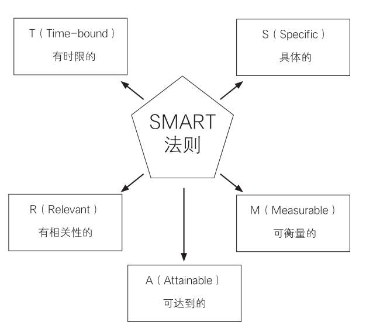

二、制订目标：推演实现过程，制订可完成的目标
TED演讲中有一段很出名的关于时间的演讲，里面讲了一个应用倒推思维的例子：
你是不是习惯在年初写下这一年的新年愿望，但是你会发现，在年底的时候，这些愿望多半都没有实现，甚至崭新到可以直接复制粘贴变成下一年的新年愿望。那怎么解决这个问题呢？
这个演讲提供了一种倒推的思路：在年初写下当年的年终总结。
你可以试着这样开始你的“年终总结”，我们以2022年为例。
2022年，我完成了以下三件事：A、B、C。接着写，我是如何完成以上三件事的，把如何完成这三件事的具体步骤写出来。当然，你写的时候会发现，有些事情你无法写出具体步骤，因为你写的时候，就能感觉到自己根本做不到，也就是无法实现。
这就是很典型的倒推思维的方式，它能帮助你理清通向目标的路径，也能够确保你制订出你真正能实现的目标。这是因为，困难的事情通常是复杂的、抽象的，如果能把复杂的、抽象的问题拆分成一个个细小的任务，这样事情就会变得简单很多。无论多么重大的项目，最终都要落实到每一个可操作的任务上，这也是倒推思维的核心所在。
我们来举一个学习的例子，看看我们该如何利用这种倒推思维。你可以采用这种自我问答的方式推演实现过程，来制订自己的目标和行动计划。
比如，你现在是大二，但是你的目标是要考上研究生，那你具体该怎么做呢？
来，我们一起倒推。想象一下，你现在已经收到你理想大学的研究生录取通知书。开始倒推，你怎样才能收到这封录取通知书呢？你的政治要考多少分？英语多少分？专业课多少分？根据你定下的分数，来拆解具体你要做什么。
比如，以英语为例，你现在去做一套考研英语真题，你能得多少分？离目标分数还差多少？差距的原因是单词、语法、作文，还是其他方面。
《刻意练习》这本书中曾讲到，做好一件事情的精髓就是：树立目标——制订计划——把计划具体为每天可执行的任务——执行并加上及时的反馈。
那么，根据这个方法，当你发现你在英语单词方面有不足时，你可以把自己的单词量目标设定为8000个或者10000个。然后你可以把这些单词量拆分到每一学期、每一个月、每一周、每一天。这样就把抽象的问题具体化、复杂的问题简单化了。量化后，一切就变得可执行了。
以上，你已经知道了制订目标的具体过程，那么下面，我再给大家分享一个能制订出合理目标的工具——“SMART法则”，它能让你更科学合理地制订清晰的目标。
SMART法则，是一项很著名的目标管理法则，最早是由管理学大师彼得·德鲁克在《管理的实践》一书中提出，当然，其在制订学习目标上同样有效，具体包括五项原则：
S：具体的（Specific）
这是制订目标的第一原则，指目标是清晰具体的，而不是模糊笼统的。这样才能明确知道，要达成的目标具体是什么。
比如，我的目标是考上一所好大学，这就是一个模糊笼统的目标。如果换成具体的，就可以变成：我要考上清华大学。

再比如，你要努力学习，就是一个模糊笼统的说法，你可以替换成，我要每天增加两个小时的学习时间。具体而言，你可以每天比原来早起床两小时，早上6点起床，学习到早上8点，这样就增加了两个小时的学习时间。
M：可衡量的（Measurable）
可衡量的，就是指有一组明确的数据，可作为衡量是否达成目标的依据。如果制订的目标没有办法衡量，就无法判断这个目标是否实现了。
比如，你的目标还是要考上清华大学，那你就可以制订出可以衡量的目标，在高考时成绩进入全省前五十名。
再举一个例子，假设你的目标是提高成绩，那你可制订可以衡量的目标，比如，“这个学期期末考试，我要进入年级前十名”。
A：可达到的（Attainable）
可达到的，就是指目标不是好高骛远，是在现实中可以实现的。反之，如果你制订的目标在现实中基本没有实现的可能性，那这样的目标是毫无意义的。
比如，你平时的考试成绩只能上二本线，现在距离高考只有10天了，你给自己定下的目标是要考上清华大学，这个就是现实无法达到的。
所以，我们定目标的时候，不能太低，不能是唾手可得的水平，因为这样无法挖掘自己的潜能。最好是你要跳起来够一够才能实现的目标。比如，你平时的成绩在全省能排到前五百名以内，在高考前100天定下要考上清华大学的目标，就是合理的。而如果你定下来的目标是要考上北京理工大学，这其实就没有起到激励你的作用，因为全省前五百名考上北京理工大学是完全没有问题的。
R：有相关性的（Relevant）
有相关性是指你的目标要与你的其他目标，或者组织内的整体目标有相关性。如果实现了这个目标，但对其他的目标实现没有带动，或者相关度很低，那这个目标即使实现了，意义也不是很大。
比如，你的大目标是考上清华大学，同时你也给自己定了一个“要在高考前100天练好一口流利的英语”的小目标。这个小目标看似对你的英语成绩提高有帮助，但从根本上来说，练一口流利的英语与你考上清华大学并没有太直接的关系。你不如把自己的小目标换成：在高考前100天，把最近十年的高考英语真题做5遍，背下其中所有不会的单词，学懂里面任何不懂的语法，弄懂遇到的每一道错题。这样的目标既能提高你的英语高考成绩，也能直接助力你考上清华大学，这就是有相关性的目标。
T：有时限的（Time-bound）
有时限的，就是指目标要在一定的时间内完成，而不是遥遥无期。很多人都说，Deadline（截止日期）是第一生产力，这就是有时限的强大作用。
在几乎人人都有拖延症的时代，目标如果没有时限，那这个目标基本就是形同虚设的，因为你很可能永远都不会开始，或者开始了，遇到一些困难，你就暂时逃避或者放弃了，有时甚至是永远。
所以，一定要在定目标时，给自己加上时限。比如，你定下来的目标是“我要背完单词表上的所有单词”，光这样是不够的，你可以加个时限，比如“在接下来的100天内”。目标的设置一定要有时限，当然，这个时限是你能实现的。
总之，制订你的学习目标，如果严格按照SMART法则的5个要求来制订，目标就会变得具体而清晰，你在后续学习的时候也会方便执行。